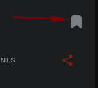

<ion-header [translucent]="true" >
  <ion-toolbar color="secondary">
    <ion-buttons slot="start">
      <ion-menu-button auto-hide="false" menu="home-menu"></ion-menu-button>
    </ion-buttons>
    <ion-title>
      MyRadio.FM
    </ion-title>

  </ion-toolbar>
  <ion-toolbar mode="ios" color="secondary">
    <ion-segment [value]="activeTab" mode="ios" (ionChange)="segmentChanged($event)">
      <ion-segment-button value="FAVORITES">
        <ion-label>Favoritos</ion-label>
      </ion-segment-button>
      <ion-segment-button value="EXPLORE">
        <ion-label>Explorar</ion-label>
      </ion-segment-button>
    </ion-segment>
  </ion-toolbar>
</ion-header>

<app-menu></app-menu>

<ion-content id="home-content" color="primary" *ngIf="activeTab === 'FAVORITES'">
  <ion-list>
    <div *ngIf="favoriteStations.length === 0" class="no-list-message ion-padding">
      
      Las listas de reproducción que marques se mostrarán aquí
    </div>

    <app-station-item *ngFor="let station of favoriteStations" [station]="station" [adminStation]="false"></app-station-item>
  </ion-list>
</ion-content>

<ion-content id="home-content" color="primary" *ngIf="activeTab === 'EXPLORE'">
  <div class="loc__search">
    <div class="loc__search-container">
      <input 
        type="search"
        placeholder="Buscar (Próximamente)"
        disabled
        class="loc__search-input"  
        maxlength="50"
        [(ngModel)]="searchTxt"
      >
      <ion-icon name="search-sharp"></ion-icon>
    </div>
    <ion-button 
      (click)="openFiltersModal()" 
      class="loc__filters-btn"
      mode="ios"
    >
      Filtros
      <ion-icon name="filter" slot="end"></ion-icon>
      <ion-badge slot="end" color="tertiary">{{cantFilters}}</ion-badge>
    </ion-button>
  </div>

  <app-skeleton *ngIf="stations.length === 0 && !connectionError"></app-skeleton>

  <div class="loc__connection-error no-list-message ion-padding" *ngIf="connectionError">
    Error de conexión al obtener las listas de reproducción.
    <div>
      <ion-button 
        color="medium"
        (click)="getStations()"  
      >Reintentar</ion-button>
    </div>
  </div>

  <app-station-item 
    *ngFor="let station of stations; trackBy: trackByFn" 
    [station]="station" 
    [adminStation]="false"
  ></app-station-item>

  <ion-infinite-scroll threshold="100px" (ionInfinite)="loadData($event)">
    <ion-infinite-scroll-content
      loadingSpinner="bubbles"
      loadingText="Cargando más listas...">
    </ion-infinite-scroll-content>
  </ion-infinite-scroll>
</ion-content>
